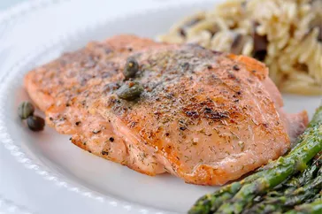

Description
Have your own fish fry with these easy, step-by-step instructions for frying it perfectly.
Steps
Pick your Fish
- Same thing goes for deep frying as for pan frying:
You're going to want to go with more of a neutral-flavored fish that isn't overly oily.
So most types of white fish will do. Some common choices include cod, tilapia, catfish, halibut, trout,
striped bass, flounder, and perch. If you're making fish and chips, cod is going to be a solid choice.
For tips on how to pick the freshest fish refer to our guide. You can go with fresh or frozen, just factor in thawing time if you're using frozen.
Prep the Fish
- One pound of skinless fillets, or four 4-ounce skinless fillets (about ½-inch thick) is the perfect
amount for serving a family of four. If you're starting with frozen fish, start by thawing them in the
refrigerator for 24 hours ahead of time.
If your fillets are thicker than ½-inch thick, go ahead transfer them to a cutting board and cut them
lengthwise to get the desired thickness — this will give you crispier fish in the end! Then cut the fillets
into 3-inch x 2-inch pieces. Rinse the fish and pat dry with paper towels.
Heat Oil
- As the name suggests, deep-fried fish is going to require a pan with a deeper interior. You can either use a 3-quart heavy saucepan a deep-fat fryer. If using a saucepan, heat 1 quart of vegetable oil over medium-high heat. Attach a deep-frying thermometer to the side of the pan and heat the oil to 375 degrees F (190 degrees C) .
Make the batter
- In a medium-sized bowl, mix 1 cup all-purpose flour, 1 teaspoon baking powder, 1 teaspoon salt, and 1 teaspoon ground black pepper.
- Stir in 1 cup of milk and 1 egg until smooth. Let the mixture stand for 20 minutes.
Dredge the Fish and Fry
- Preheat the oven to 300 degrees F (150 degrees C) — you'll see why in a second.
One piece at a time, dredge the fish in batter and place it in the hot oil. Fry until golden brown. After frying each piece, place it on a plate lined with a layer of paper towels to drain.
To keep the fish warm while the others are frying, transfer them to a baking dish and place in a preheated oven until you're ready to serve.
Return to top